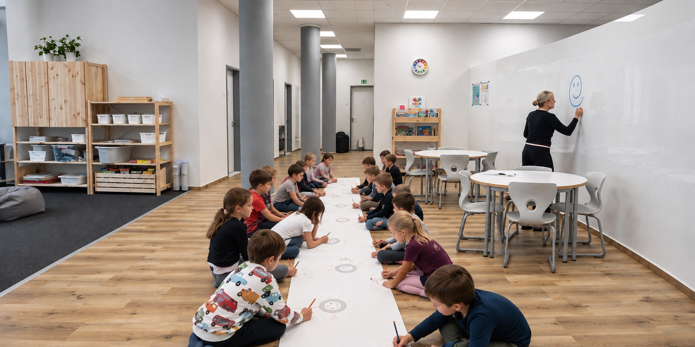
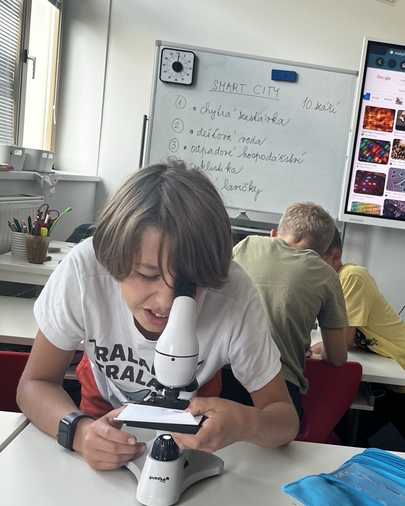
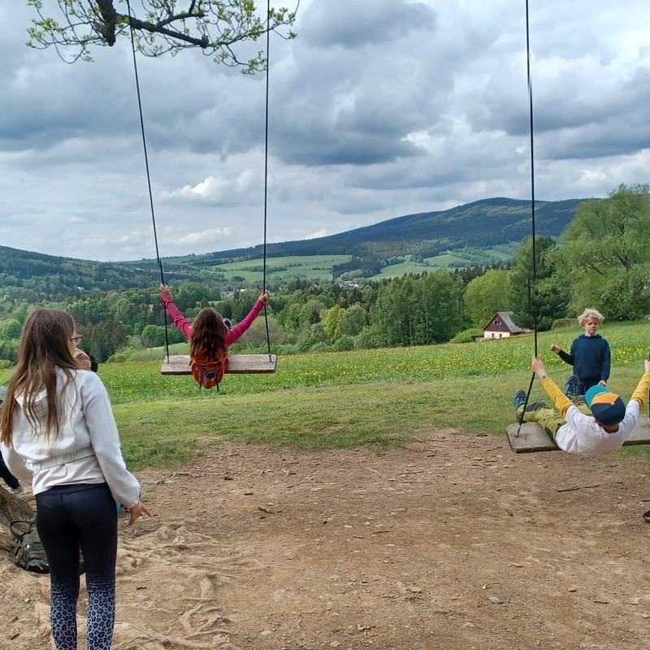
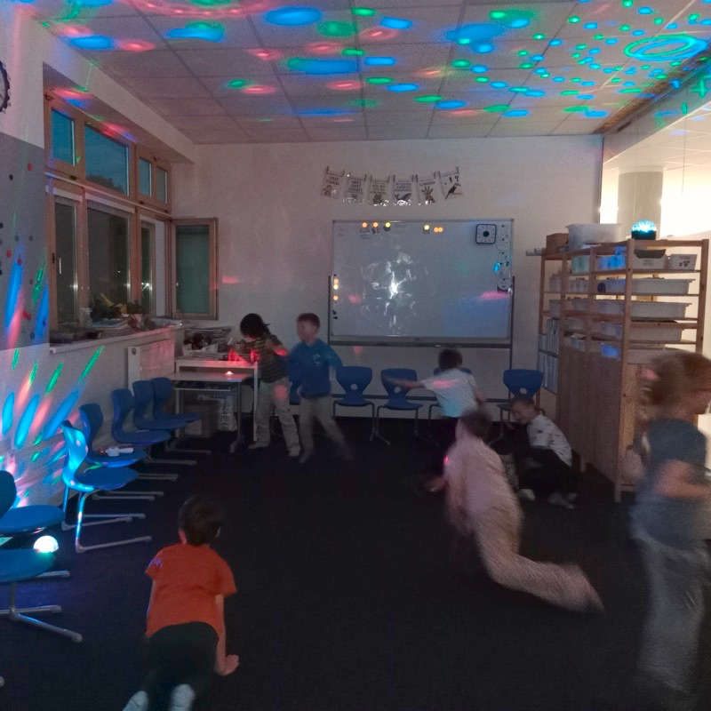
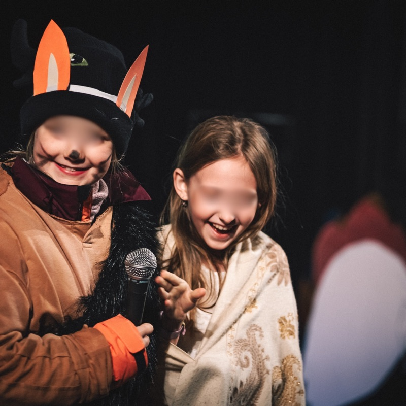
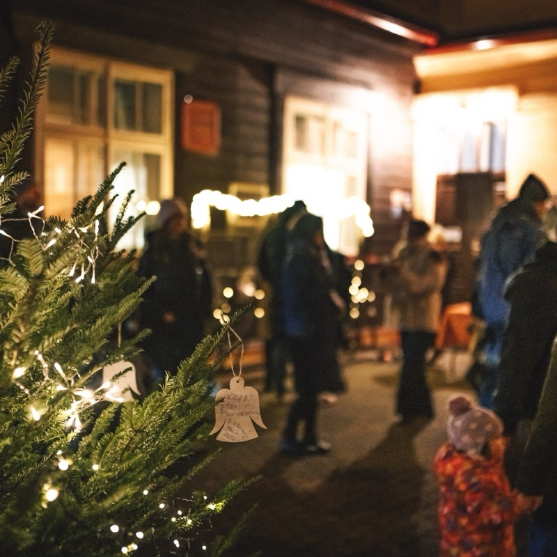

KROK School · Hradec Králové · Czech Republic
Strong foundations. Courage to explore.
KROK is a small and growing primary school in Hradec Králové, Czech Republic. We combine strong academic foundations with deeper understanding, interdisciplinary learning, meaningful feedback and opportunities for children to take increasing responsibility for their learning.
English is an important part of everyday school life, and we are gradually opening our school to international cooperation, new perspectives and partnerships across Europe.
Open to international cooperation · eTwinning · Erasmus+ in preparation
- 75pupils
- 16children maximum per class
- 2native English speakers in our team
- 2027opening our lower secondary school
We currently teach Grades 1–5 and grow by one grade each year. KROK was founded in 2022. In September 2027, we will open our lower secondary school, and by 2030 KROK will have all nine grades, educating pupils from ages 6 to 15.
How we teach
Strong knowledge. Deeper understanding. Learning that can be used.
We believe children need strong knowledge to think well. At KROK, we therefore combine explicit teaching and systematic practice with opportunities to explore, make connections, ask questions and apply what children know in new situations.
We want pupils not only to remember what they have learned, but to understand it, explain their thinking and gradually become more independent learners.
Building strong foundations
Knowledge matters. We explicitly teach important knowledge and skills, practise them and return to them over time. Secure foundations give children something to think with – and something new learning can connect to.
Connecting knowledge through projects
Interdisciplinary projects give children opportunities to bring knowledge from different subjects together around larger questions. They investigate, discuss, create and present – but projects build on knowledge rather than replace its systematic teaching.
Using feedback to move learning forward
We do not use traditional grades. Instead, pupils work with clear criteria and ongoing feedback that helps them understand what they already do well, what they need to work on and what their next step should be. From an early age, they also learn to reflect on their own work and progress.
Growing independence
Responsibility develops gradually. As children grow, we give them increasing opportunities to make decisions, organise their work, reflect on their learning, collaborate with others and take responsibility for the quality of what they produce.
English at KROK
English as a language to use, not only a subject to study.
English is part of school life from Grade 1 and has an extended place in our curriculum. Children build their language systematically in English lessons, while also meeting native English speakers during lessons and in our afternoon programme.
As they grow, English increasingly becomes a language for learning as well. Health and Movement is taught in English, and from Grade 3 pupils also take part in project-based learning in English.
Our aim is not simply to give children more English lessons, but to give them meaningful reasons to use the language. Through international projects and eTwinning, English gradually becomes what we want it to be: a tool for communicating, learning and connecting with people beyond our school.

Life at KROK
High expectations. Strong relationships. A school where children feel they belong.
We believe children can be challenged and feel safe at the same time. High expectations work best when they are built on trust, strong relationships and clear boundaries.
At KROK, we want children to know that adults believe in what they are capable of – and will support them in getting there. We combine kindness with consistency: expectations are clear, mistakes are part of learning, and children are encouraged to persevere when something is difficult.
Because our classes are small, teachers know their pupils well. This allows us to notice progress, respond when a child needs support or greater challenge, and build a classroom culture where children learn to work with others, take responsibility and contribute to the community.
School life is also much more than lessons. Projects, trips, outdoor learning, performances, overnight stays at school and time together in our afternoon programme all help build relationships and a sense of belonging.




International cooperation
Learning with and from schools beyond our borders.
We want international cooperation to become a natural part of learning and professional life at KROK – not an occasional extra, but something that gradually connects our pupils and teachers with people, ideas and perspectives beyond our school.
We have already taken our first steps through eTwinning, connecting with schools in Spain, Poland and Italy. Our pupils have introduced themselves, shared glimpses of their school life and met children from other countries during online calls. These are simple beginnings, but they give English a real purpose and help children discover that learning can reach far beyond their own classroom.
As KROK grows, we want our international work to grow with it. Our aim is to build lasting relationships with schools across Europe, learn from one another and gradually create opportunities for both teachers and pupils to collaborate, visit, exchange ideas and learn together.
- eTwinning
- today
- Erasmus+
- long-term partnerships
- pupil opportunities
Erasmus+
We are taking our first steps towards Erasmus+.
We are currently preparing our first Erasmus+ application for 2027. For us, Erasmus+ is not simply an opportunity to travel – it is a way to bring new perspectives into our school and strengthen the professional learning of our team.
Our first priority is teacher development. We would like to use job shadowing to spend time in schools abroad, observe everyday teaching and school life, talk with colleagues and explore approaches that we can thoughtfully adapt to our own context.
We also want to strengthen the English language skills and confidence of our staff, making international collaboration increasingly accessible across our team.
As our experience and partnerships grow, we hope to involve pupils more directly – through shared projects, visits and other opportunities to learn alongside their peers in Europe.
Let's learn from each other
Different schools. Shared questions.
We are particularly interested in connecting with schools that enjoy asking questions about teaching and learning – including schools that may approach those questions differently from us.
How do we build strong knowledge – and help pupils use it?
We are interested in approaches that combine high-quality teaching with deeper understanding, interdisciplinary learning and meaningful application of knowledge.
How do pupils gradually become more independent learners?
We would love to exchange ideas around formative assessment, feedback, pupil responsibility, reflection and agency.
How can English become a real language for learning and communication?
We are exploring CLIL, international projects and other ways of creating authentic reasons for pupils and teachers to use English.
How do we create schools where high expectations and wellbeing reinforce each other?
We are interested in school culture, relationships, learning environments and the everyday structures that help children feel safe, belong and do their best work.
We do not expect partner schools to work exactly as we do. Different approaches are part of what makes international cooperation valuable. We are looking for schools that are curious, open to sharing practice and willing to learn from one another.
Let's connect
Perhaps our schools have something to learn from each other.
We would be happy to hear from schools and educators interested in eTwinning, professional exchange, job shadowing or future Erasmus+ cooperation.
You do not need to have a project ready. If something on this page resonates with you, we would simply be happy to start a conversation.
ZŠ KROK
Hradec Králové · Czech Republic